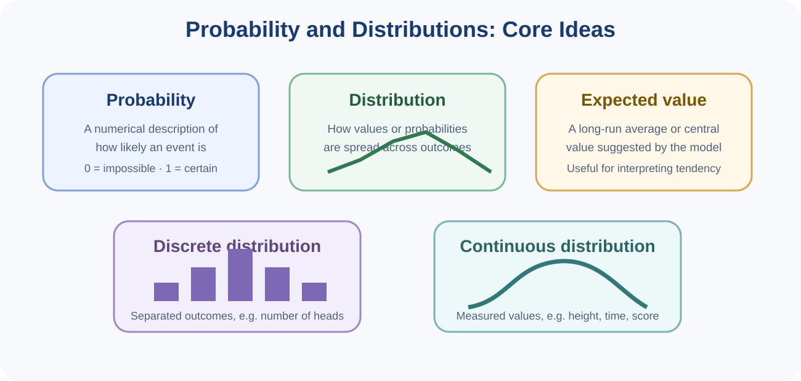
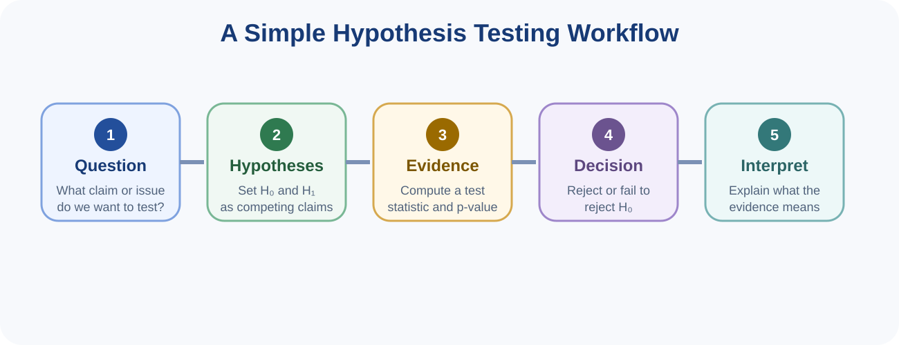
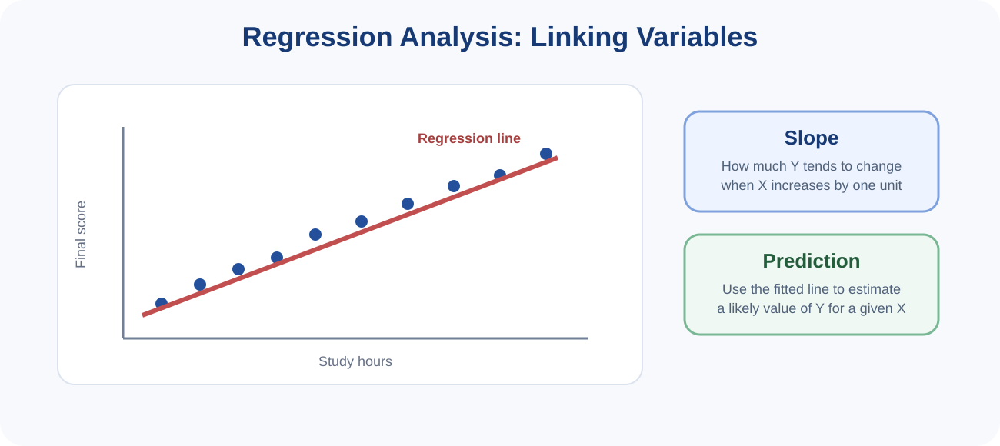

You can read these notes on screen or use the button below to print or save them as PDF.
Probability provides a language for describing uncertainty. In Data Science, we rarely know everything with complete certainty. Instead, we often ask how likely an event is, how values are distributed, or how much variation we should expect.

Probabilities range from 0 to 1. A probability near 0 describes an event that is very unlikely, a probability near 1 describes an event that is very likely, and a probability of exactly 0 or 1 describes impossibility or certainty in the model being used.
An event is an outcome or condition of interest. For example, “a student passes the test” is an event. A random variable is a numerical representation of possible outcomes, such as the number of correct answers or the waiting time before a bus arrives.
A discrete distribution describes separated outcomes such as the number of heads obtained when tossing a coin several times. A continuous distribution describes measured values such as height, temperature, score or time, where values vary along a continuum.
The expected value gives a long-run average or central value suggested by the probability model. It does not mean that every individual observation equals that value. The idea of variation remains important because outcomes usually differ from one another.
At this course level, students should focus on the intuition of these distributions and when they are useful, rather than on advanced derivations.
Hypothesis testing is a structured way of using sample evidence to evaluate a claim. Instead of simply stating that two groups look different, hypothesis testing asks whether the observed difference is strong enough to be considered evidence against a default position.

The null hypothesis (H₀) usually represents a default claim such as “there is no difference” or “there is no effect”. The alternative hypothesis (H₁ or Hₐ) represents the competing claim such as “there is a difference” or “there is an effect”.
| Scenario | Possible null hypothesis | Possible alternative hypothesis |
|---|---|---|
| Two teaching methods | Both methods produce the same mean score | The mean scores differ |
| New fertiliser | The fertiliser does not change yield | The fertiliser changes yield |
| Website redesign | The redesign does not change completion rate | The redesign changes completion rate |
A test statistic summarises how far the observed data depart from what would be expected if the null hypothesis were true. The p-value describes how unusual the observed result would be under the null hypothesis. A small p-value is evidence against the null hypothesis.
Many introductory examples use a significance level such as 0.05. If the p-value is smaller than this threshold, we may say there is statistically significant evidence against the null hypothesis. Otherwise, we fail to reject the null hypothesis. Failing to reject is not the same as proving the null hypothesis true; it means the evidence was not strong enough.
Statistical significance does not automatically imply practical importance. A tiny but statistically significant difference may not matter in real life. Good interpretation therefore considers the research question, the size of the effect, the quality of the data and the context of use.
Regression analysis studies how one variable changes in relation to another or to several others. It is widely used for explanation, prediction and trend estimation. In its simplest form, a regression model describes the relationship between one predictor variable and one outcome variable.

In a simple linear regression, one numerical predictor X is used to model an outcome Y. A fitted line is used to summarise the relationship. The slope of the line indicates the direction and size of change in the outcome when the predictor increases by one unit.
For example, a model might relate study hours per week to final examination score. If the fitted line slopes upward, the model suggests that students who study more tend to achieve higher scores. This is an association pattern useful for description or prediction, but it does not automatically establish that study hours alone caused the score difference.
Regression models can be used to estimate a likely outcome for a given input. Predictions should remain within sensible context and should be interpreted cautiously when extrapolating far beyond the observed data.
A residual is the difference between an observed value and the value predicted by the model. Residuals help show how well the model matches the data and whether patterns remain unexplained.